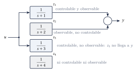
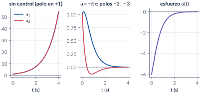
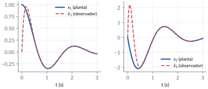
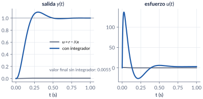

9. Retroalimentación de estado y observadores
Semanas 10–11 · cuatro clases
Hasta ahora diseñamos controladores sobre la función de transferencia. En esta parte volvemos al espacio de estado y lo usamos para diseñar: si medimos todos los estados, \(u=r-\Km x\) pone todos los polos donde queramos, siempre que el sistema sea controlable. Si no los medimos, un observador los estima a partir de la entrada y la salida, siempre que sea observable. El principio de separación permite diseñar las dos cosas por aparte, y un integrador agregado al estado anula el error en estado estacionario.
Al terminar esta parte usted podrá
- Explicar con controlabilidad y observabilidad por qué una función de transferencia puede esconder modos, y decidir si un sistema es estabilizable y detectable.
- Diseñar \(u=r-\Km x\) para ubicar los polos que piden las especificaciones, por comparación de coeficientes y con la fórmula de Ackermann.
- Diseñar un observador de Luenberger y unirlo con la retroalimentación de estado (principio de separación).
- Agregar acción integral para anular el error en estado estacionario, y medir el precio en esfuerzo de control.
Ruta de las clases
| Clase | Qué se ve | Handout | Scripts |
|---|---|---|---|
| 1 | Lo que la función de transferencia esconde; \(u=r-\Km x\); controlabilidad, PBH | §9.1–9.3 | C9_Ej1–C9_Ej3 |
| 2 | Ackermann; de las especificaciones a los polos; el servo | §9.4–9.5 | C9_Ej4–C9_Ej6, crearModelo_RetroEstado |
| 3 | Observabilidad y observador de Luenberger; dualidad | §9.6 | C9_Ej7 |
| 4 | Principio de separación y compensador; acción integral | §9.7–9.8 | C9_Ej8, C9_Ej9, crearModelo_Observador |
Lo esencial, en una página
Lo que la función de transferencia esconde
Un sistema de cuarto orden puede tener función de transferencia \(1/(s+1)\): solo se ve la parte controlable y observable. Es estabilizable si sus modos no controlables son estables y detectable si lo son los no observables. Por eso nunca se cancela un polo inestable con un cero.

Retroalimentación de estado y controlabilidad
\[ u=r-\Km x\quad\Longrightarrow\quad \dot x=(\Am-\Bm\Km)\,x+\Bm r . \] Los \(n\) polos se pueden poner donde se quiera si y solo si \(\operatorname{rango}\Ctrb=n\), con \(\Ctrb=[\Bm\;\;\Am\Bm\;\;\cdots\;\;\Am^{n-1}\Bm]\). Con una entrada, la fórmula de Ackermann da \(\Km=[0\;\cdots\;0\;1]\,\Ctrb^{-1}q(\Am)\).

Controlable no quiere decir barato
Cuando el sistema está “casi” sin controlabilidad (número de condición de \(\Ctrb\) grande), las ganancias y el esfuerzo de control crecen sin límite. Y las ganancias dependen de la representación de estado: tf2ss y las variables de fase dan \(\Km\) distintos para los mismos polos.
Observador de Luenberger
\[
\dot{\est{x}}=(\Am-\Lm\Cm)\,\est{x}+\Bm u+\Lm y,\qquad \dot\errest=(\Am-\Lm\Cm)\,\errest,\quad \errest=x-\est{x}.
\] Se puede diseñar si y solo si \(\operatorname{rango}\Obsv=n\). \(\Lm\) se calcula como \(\Km\) en el sistema dual: L = acker(A',C',p)'. En el curso el estimado se escribe \(\est{x}\), porque \(\hat{x}\) es la variable desviación.

Principio de separación
Con \(u=-\Km\est{x}\), los polos del conjunto son los de \(\Am-\Bm\Km\) más los de \(\Am-\Lm\Cm\): se diseñan por separado. El compensador completo es una función de transferencia \(U/Y=-\Km\bigl(s\Id-(\Am-\Bm\Km-\Lm\Cm)\bigr)^{-1}\Lm\). Ojo: la separación supone un modelo exacto; la robustez hay que verificarla.
Acción integral
Se agrega el estado \(\dot z=r-y\) y la ley \(u=-\Km x+K_e z\). Un polo más que ubicar y, si el lazo es estable, \(y\to r\) ante cualquier escalón.

Explorador de ubicación de polos
Planta \(1/(s^2+a_1s+a_0)\) en variables de fase. Escoja las especificaciones, active o no la acción integral y mire la salida, el esfuerzo de control y las ganancias que resultan. Intente reproducir los ejemplos del handout.
Retos con el explorador
- Con los valores iniciales y sin acción integral, compruebe \(\Km=[180.1\;\;11]\) y el valor final \(0.0055\) del handout.
- Active la acción integral con el tercer polo a \(12.5\) veces \(\zeta\wn\) (el polo en \(-100\) del ejemplo): ¿obtiene \(K_e\approx18\,314\)? ¿Cuánto vale el pico de \(u\)?
- Ponga \(a_0=-2\) (planta inestable): ¿sigue funcionando el diseño? ¿Qué le pasa a \(K_1\)?
- Baje \(\ts\) a \(0.2\) s: ¿qué le pasa al esfuerzo de control?
Códigos de esta parte
Los bloques salen directamente de los archivos del repositorio. Ejecute antes iniciarCurso.
Lo que la función de transferencia esconde (§9.1).
% No se encontró ../../codigo/cap09_retroalimentacion_estado/C9_Ej1_Kalman.mRango, PBH y número de condición (§9.3).
% No se encontró ../../codigo/cap09_retroalimentacion_estado/C9_Ej3_Controlabilidad.m% No se encontró ../../codigo/cap09_retroalimentacion_estado/C9_Ej3_Controlabilidad.mLa fórmula de Ackermann paso a paso (§9.4).
% No se encontró ../../codigo/cap09_retroalimentacion_estado/C9_Ej4_Ackermann.mDe las especificaciones a los polos (§9.5).
% No se encontró ../../codigo/cap09_retroalimentacion_estado/C9_Ej5_Especificaciones.mLas funciones del curso polosDeseados y variablesFase.
% No se encontró ../../codigo/comun/polosDeseados.mObservador de Luenberger (§9.6).
% No se encontró ../../codigo/cap09_retroalimentacion_estado/C9_Ej7_Observador.mPrincipio de separación y compensador (§9.7).
% No se encontró ../../codigo/cap09_retroalimentacion_estado/C9_Ej8_Compensador.mSin integrador (§9.8).
% No se encontró ../../codigo/cap09_retroalimentacion_estado/C9_Ej9_Integral.mCon integrador.
% No se encontró ../../codigo/cap09_retroalimentacion_estado/C9_Ej9_Integral.mverificarCap09 comprueba los números clave del capítulo.
% No se encontró ../../codigo/cap09_retroalimentacion_estado/verificarCap09.mModelos de Simulink
Los modelos se construyen por código
| Script | Modelo | Para qué |
|---|---|---|
crearModelo_RetroEstado.m |
dos copias de la planta: \(u=r-\Km x\) y \(u=-\Km x+K_e z\) | comparar salidas y esfuerzos; perturbar la planta y ver que el integrador sigue llegando a 1 |
crearModelo_Observador.m |
planta + observador + \(u=-\Km\est{x}+Nr\), con interruptor para usar el estado real | ver cuánto tarda \(\est{x}\) en alcanzar a \(x\) y cómo afecta la respuesta |
Corra el script y se crea el .slx.
Pausas activas
1. ¿Y si \(a=0\)?
En la planta \(\Am=\begin{bmatrix}-1&a\\3&-2\end{bmatrix}\), \(\Bm=[0\;\;1]^\top\), ¿qué polo no se puede mover si \(a=0\)?
Respuesta
El de \(-1\): el polinomio queda \((\lambda+1)(\lambda+2+K_2)\), porque con \(a=0\), \(\dot x_1=-x_1\) y la entrada no llega a \(x_1\).2. Ackermann a mano
\(1/(s(s+3))\) en variables de fase, polos en \(-4\pm j4\). ¿Cuánto vale \(\Km\)?
Respuesta
\(\Km=[32\;\;5]\): \(\lambda^2+(3+K_2)\lambda+K_1=\lambda^2+8\lambda+32\).3. Cancelar el cero
Para \(100(s+1)/(s(s+2)(s+3))\) con \(\OS=10\,\%\) y \(\tp=1\) s, el tercer polo va sobre el cero. ¿Qué queda en lazo cerrado con \(u=r-\Km x\)?
Respuesta
\(100/(s^2+4.605s+15.17)\): la forma pedida, pero con valor final \(6.59\). Hace falta la acción integral.Problemas
El handout trae 9 problemas (estructura de Kalman, controlabilidad cuantitativa, Ackermann con especificaciones, dos representaciones, observador y ruido, compensador completo, robustez, integrador con un cero y la conexión con el I-PD), con soluciones seleccionadas.
Correcciones respecto a la versión anterior
El estimado del observador se escribe \(\est{x}\) y el error de estimación \(\errest\) (antes \(\hat{x}\) y \(e\), que chocaban con la variable desviación y el error de seguimiento). “Ackerman” → Ackermann. Signo del polinomio del servo de tercer orden corregido. El ejemplo \(\operatorname{diag}(-1,-3)\) tiene ahora solución (\(\Km=[0.5\;\;-0.5]\)). \(K_e=18\,314\) con \(\wn^2\) sin redondear.